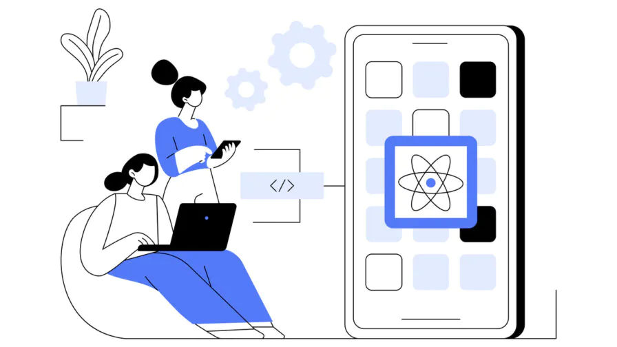
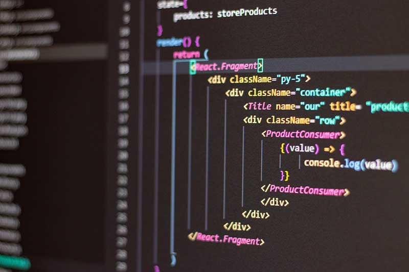

El impacto de React.js en el desarrollo web moderno
Cómo una pequeña idea dentro de Facebook terminó cambiando completamente el desarrollo frontend moderno.
Introducción
Actualmente la tecnología avanza demasiado rápido y cada vez aparecen nuevas herramientas para facilitar el trabajo de los desarrolladores. Uno de los ejemplos más importantes es React.js, una librería creada por Facebook que cambió completamente la manera de construir páginas y aplicaciones web.
En el documental “How A Small Team of Developers Created React at Facebook” se muestra cómo un pequeño grupo de programadores logró crear una de las tecnologías más utilizadas en el mundo del desarrollo web.

Los problemas del desarrollo frontend
En el año 2011 las aplicaciones web comenzaron a volverse más complejas. Herramientas como jQuery y Angular dominaban el mercado, pero tenían dificultades cuando los proyectos crecían demasiado.

El nacimiento del Virtual DOM
Jordan Walke propuso volver a renderizar la interfaz cada vez que cambiara el estado de la aplicación. Aunque parecía extraño, esta idea se convirtió en la base principal de React.
Componentes
Permiten reutilizar partes del código fácilmente.
Virtual DOM
Hace más rápidas las actualizaciones.
Open Source
La comunidad puede aportar mejoras.
Flexibilidad
Se adapta a proyectos grandes y pequeños.
El impacto en el desarrollo web
React cambió la mentalidad de muchos desarrolladores porque introdujo una forma diferente de trabajar basada en componentes independientes.
Gracias a esto, las aplicaciones modernas son más organizadas, rápidas y fáciles de mantener.

Conclusión
React pasó de ser un proyecto experimental dentro de Facebook a convertirse en una de las librerías más importantes del desarrollo web moderno.
Además de explicar una historia tecnológica, este documental demuestra que las grandes ideas pueden transformar industrias completas cuando existe innovación, trabajo en equipo y perseverancia.